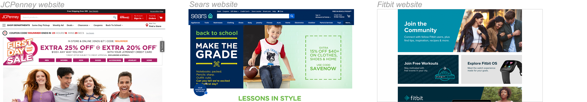
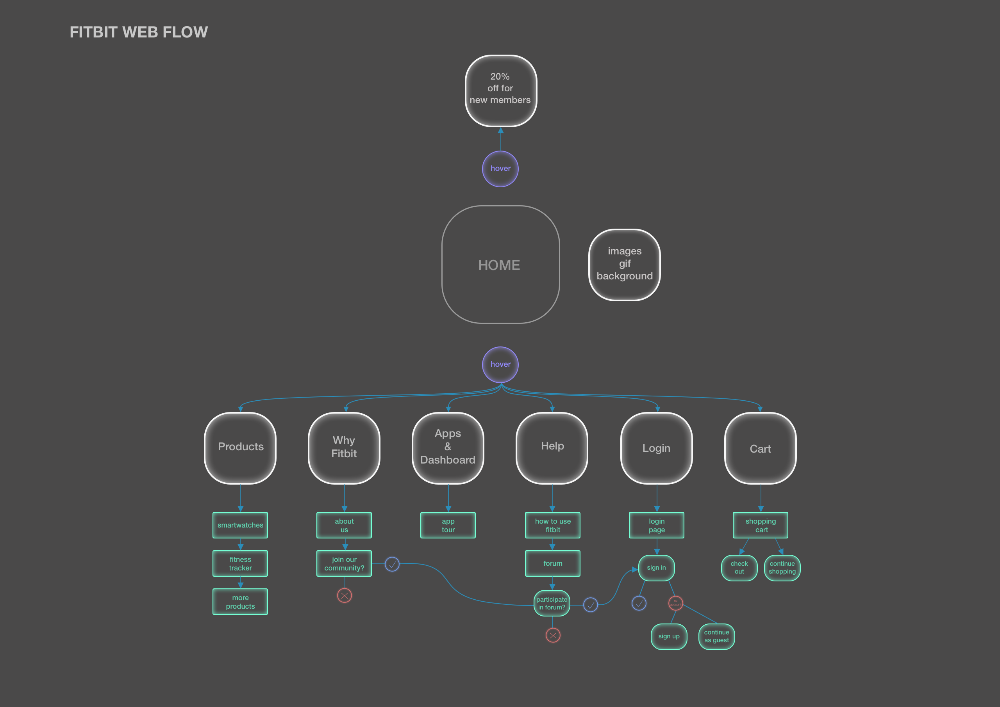
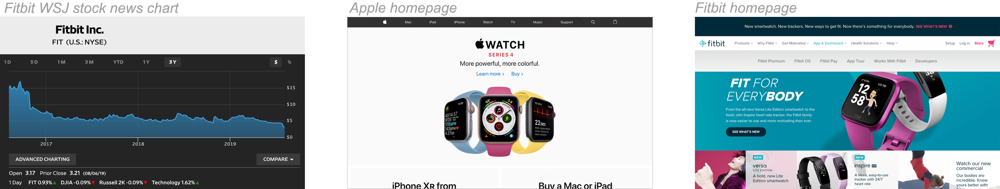
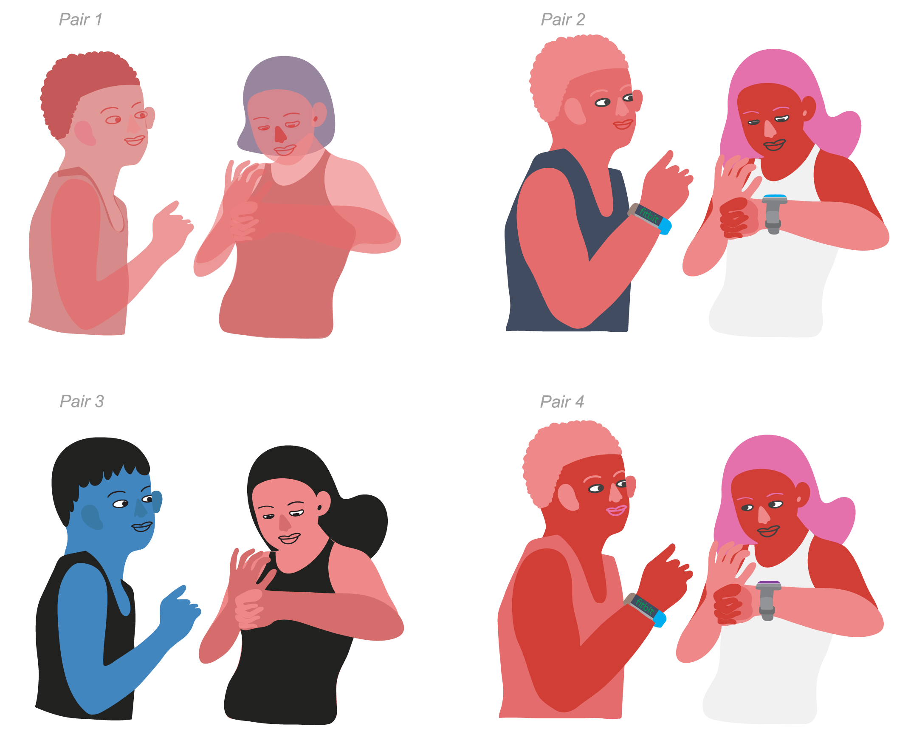
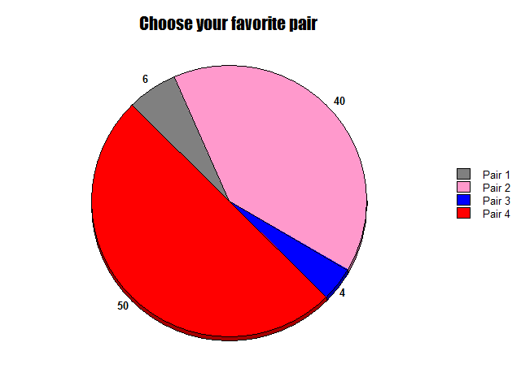
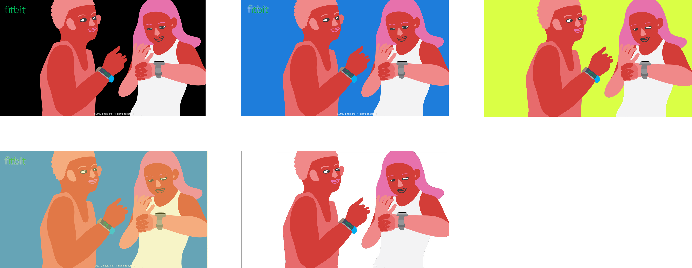
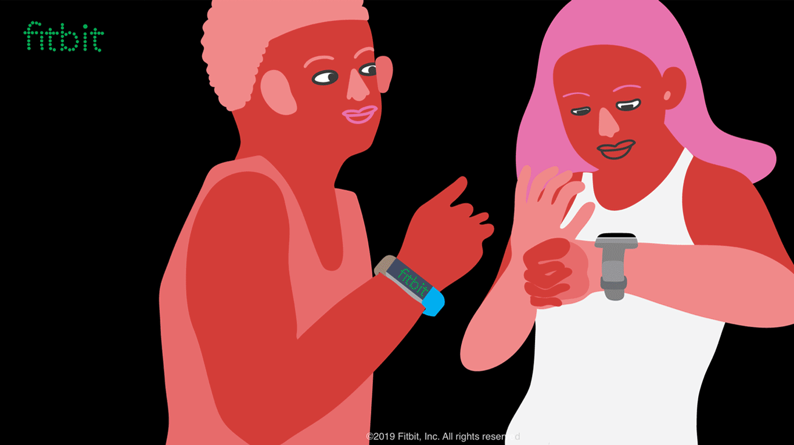
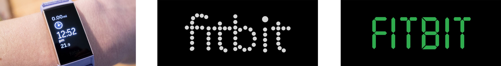
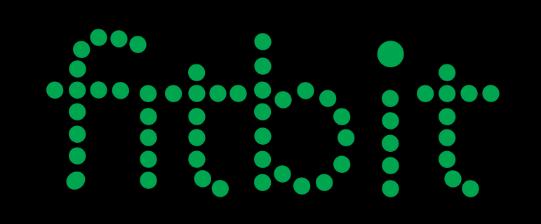

Tools used : Sketch | HTML & CSS | Adobe Photoshop | Adobe Illustrator
Modernize and re-design Fitbit's website to inspire a greater brand ethos.
FITBIT's current website is flat, unfashionable, and contains repetitious information.
Completely re-branded Fitbit's site with new: colour schemes, brand illustrations, typefaces that gave a vigor and new fantasy to their products. Users experience a more enjoyable interaction with the site as it is concise and simple.
Upon further research into FITBIT's target market, I was introduced to a 2019 insight article . The article stated that U.S. employers were expected to integrate more than 13 million health and fitness tracking devices into their wellness programs. Various articles declared that FITBIT's competitive prices allowed a greater range of new consumers the ability to afford wearable tech. FITBIT's affordable prices paired with a simple interactive device appeal to all age ranges.
With such a wide reach, I questioned if there even was a need to fashionably rejuvenate FITBIT's site. After all, however flat and superfluous the information was laid out, all needed info was available. FITBIT's site has major similarities with the sites of huge corporate American sales giants such as JCPenney and SEARS. Each hugely commercial and artless.
Upon comparing FITBIT's marketing and branding strategies to that of their main competitor, Apple, it was clear that FITBIT performed considerably inferior. FITBIT's current branding is understandable. Its plain aesthetic stirs no division within its main consumer, corporate America. Despite this, I believe FITBIT needs a real branding revamp, and I'm here to do it. I began by reworking the user flow of their original site by simplifying some excessive options.
According to the data presented by The Wall Street Journal, shares for FITBIT have plummeted. In 2019 the company saw a -70.5882% decrease in share market value in comparison to numbers presented in a successful year of 2016. FITBIT's branding is in dire need of the ability to hold influence on enpowering their consumer's capacity to aspire of a world more tremendous than their product itself. Their main competition has already understood the power of this. Not only does great branding drive monumental sales, but it can also determine and hold heavy influence on the world's culture. Making it more desirable to expand and attract global customers.
The most obvious feature of the page shows two beings interacting with two different FITBIT devices. Evidence have shown that successful marketing strategies place an emphasis on diversity. These two illustrated individuals have both female / male phenotypic traits. Unnaturally colored skin and hair give no clarity to ethnicity. One no longer looks to specific ethnic features as a guide for representation. Representation is achieved from the inability to package these two beings into a specific group. The peculiarness and familiarity of these illustrations make them fun and relatable to look at.
 A black background was originally implemented as the color suggests professionalism. Different colours were tried for a supplementary lighthearted approach. Ultimately, a balance of both were needed to achieve an ethos revolving around fun and professionalism.
 The logo was fashioned in reference to a digital clock. Given that FITBIT is a smartwatch company, I wished to incorporate a sense of tech in the font. The dotted font was chosen as the final design, as the round circles promoted a more inviting nature.
 Industries centered around tech / health + wellness stir a great interest in me. I have solely developed a landing page for desktop and mobile, but will return to expand on this project in the near future.